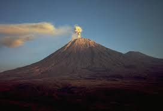
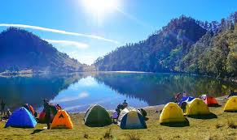
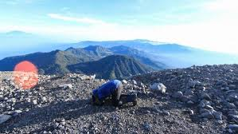

My Adventure
Pendakian akan selalu terkenang jika diceritakan dan dituliskan. Dari banyak pengalaman yang telah aku dapatkan selama traveling ke banyak tempat, gunung Semeru memiliki cerita sendiri yang menurutku akan sangat susah dilupakan.Gunung yang masuk daftar 7 puncak tertinggi di Indonesia atau biasa disebut the seven summit of Indonesia. Dan pada bulan April 2018, aku dan rombongan pun merasa terpanggil untuk menjawab tantanganya.
Perjalanan Ke Semeru
Waktu itu kami memilih Jalur Ranu Pani Tumpang sebagai Jalur Utama pendakian Kami untuk menaklukan Gunung Semeru, Jadi kami menuju Tumpang di Kabupaten Lumajang
Pada saat itu kami tiba Di Ranu Pani Sekitar Pukul 10 malam sementara jalur pendakian buka pada saat pagi hari sekitar jam 8 pagi. Karena terlambat kami memutuskan untuk bermalam di ranu pane dengan rombongan. Beruntungnya saat itu kami ditawarin untuk menginap di sebuah Villa tanpa membayar uang sepeser pun. Udara yang semakin Dingin membuat kami tidur pulas kala itu. Esoknya sekitar jam 6 pagi kami Sarapan dan Bergegas menuju Pos Pendakian yang berjarakan sekitar kurang lebih 2 km dari villa.
Setelah mengurus semua adminitrasi kami bergegas mengikuti breafing yang diselenggarakan oleh saverindo, Sebuah komunitas Pecinta alam yang pedulia akan ekosistem gunung semeru dan tentunya juga dengan keselamatan kita. Setelah selesai semua kami melakukan pendakian pada pukul 9 siang menuju Ranu Kumbolo.
Keindahan Ranu Kumbolo
Setelah mendaki sekitar 5 sampai 6 jam akhirnya kami pun tiba di Ranu Kumbolo. Sebuah Danau yang sangat populer keindahanya yang sampai ke manca negara.
Banyak sekali Pendaki kala itu saat kami tiba di Ranu Kumbolo sehingga kami kesulitan untuk mencari tempat untuk mendirikan tenda disana. Setelah menemukan tempat yang cocok kami bergegas mendirikan tenda dan beberapa orang memasak makanan yang kami bawa dari rumah.
Keindahan puncak Semeru
Bagiku, sepasca meninggalkan Ranu Kumbolo dan melanjutkan pendakian menuju Puncak Mahameru, perjalanan yang sebenarnya justru dimulai ketika meninggalkan Ranu Kumbolo. Singkat cerita kami tiba di Kali mati yaitu camp ground sebelum melakukan summit ke puncak Mahameru. Sekitar jam 11 Malam kami kami memulai expedisi menuju Mahameru. Tak sesuai apa yang saya ekpetasikan perjalanan kali ini sungguh sangat melelahkan saya pun hampir putus asa tapi beberapa teman saya terus menyemangati saya hingga pada pukul 5 pagi kami sampai ke puncak Mahameru